I am a computational social scientist and strategic communication scholar studying how media, digital platforms, and emerging technologies shape attitudes, behaviors, and decision-making. I combine computational methods with experiments and mixed-method approaches to study persuasion and media effects at scale, while keeping people and social context at the center.
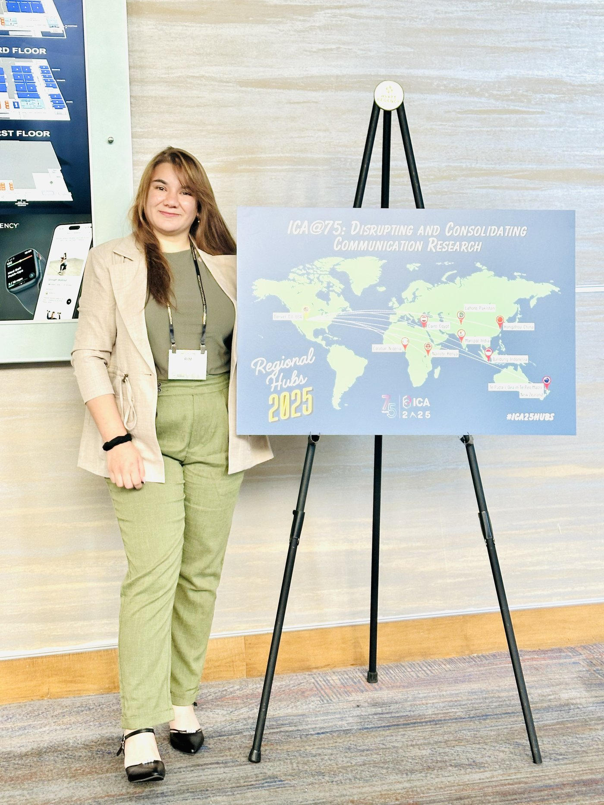
AI-generated communication, LLMs, human-AI interaction, information integrity, and virtual influencers.
Public relations, advertising, persuasion, branding, campaigns, and audience effects.
Reproductive health, online health communities, health misinformation, information seeking, and social support.
Gender, representation, digital activism, LGBTQIA+ communities, cross-cultural communication, and online identity.
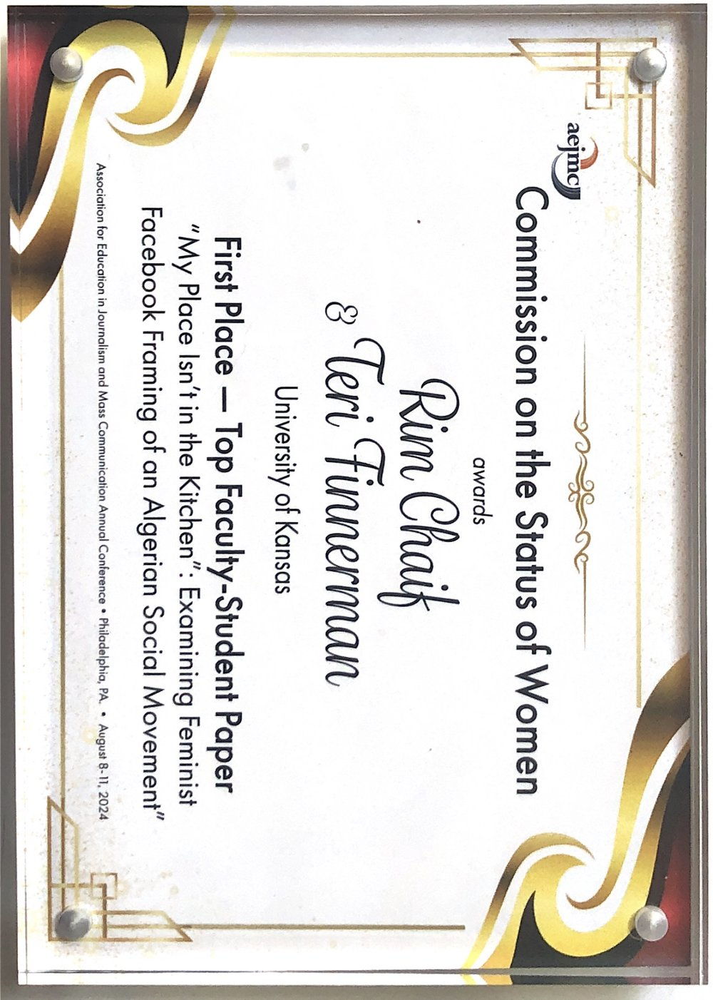
2024Examining feminist Facebook framing of an Algerian social movement. AEJMC First Place Student/Faculty Paper.
View publication →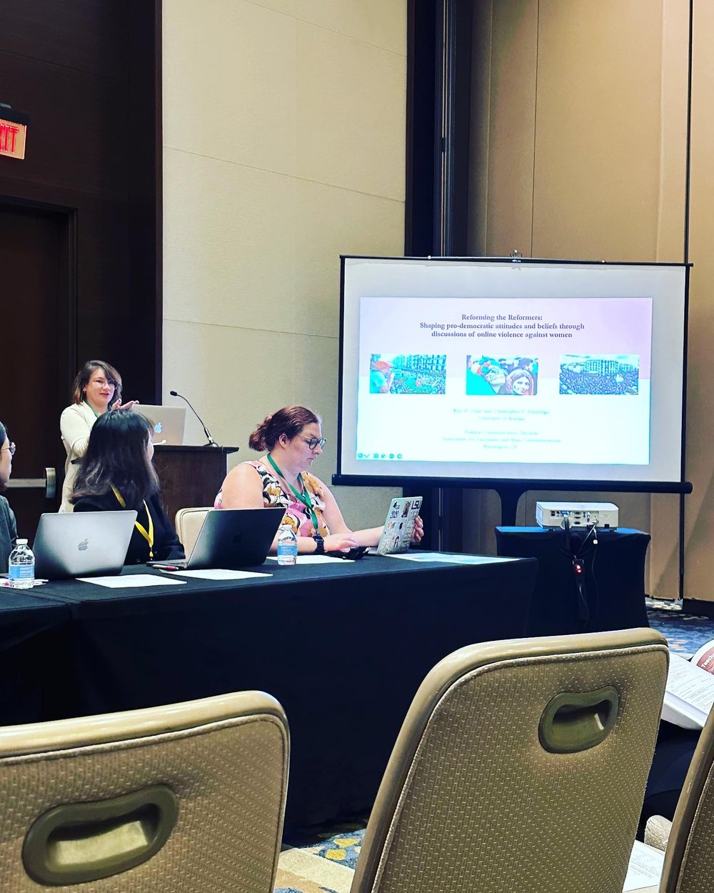
2025Feminist perspectives on social media use in the 2019 Algerian pro-democratic demonstrations.
View project →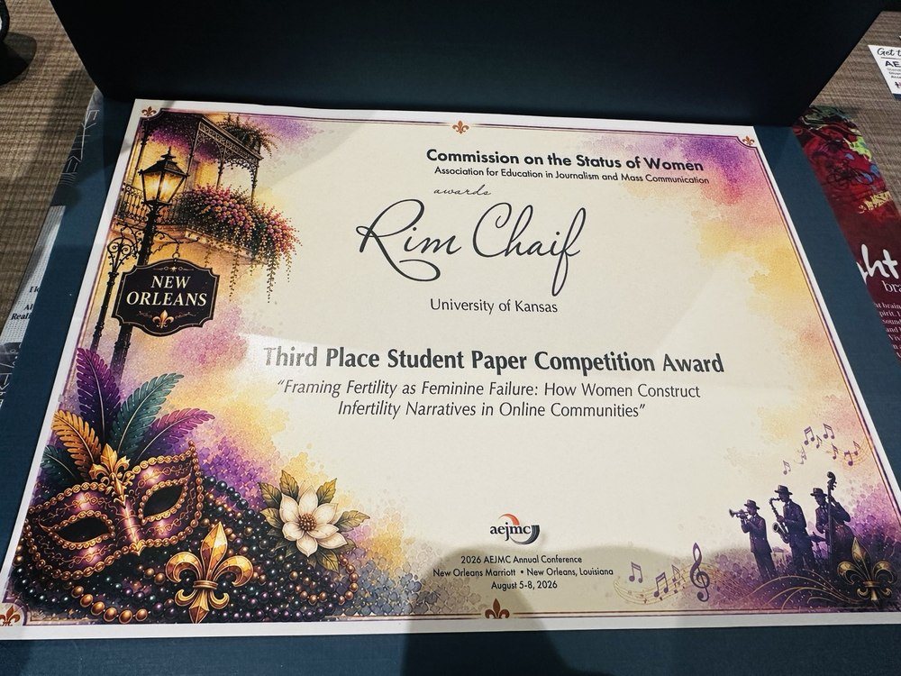
2026A computational analysis of how women construct infertility narratives in online communities. Part of my dissertation.
View project →I use natural language processing, machine learning, and large-scale social-media data to study health outcomes, behaviors, and the social forces that shape them, keeping every method anchored to a human question.
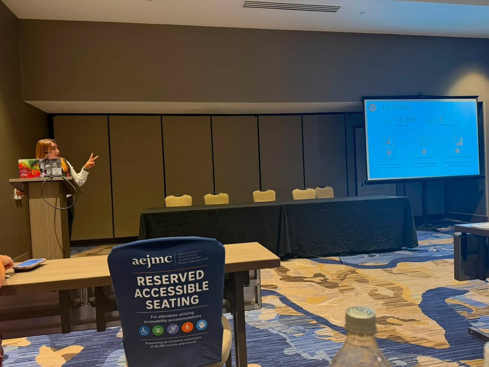
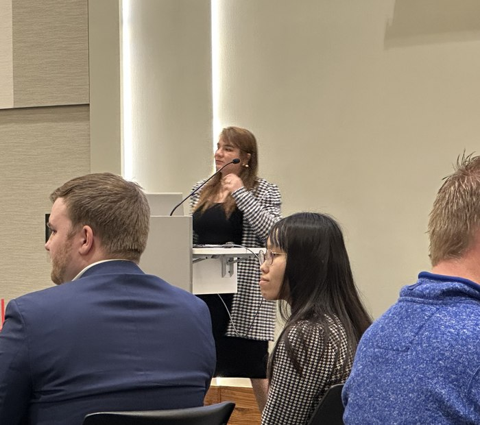
Institute for Policy & Social Research.
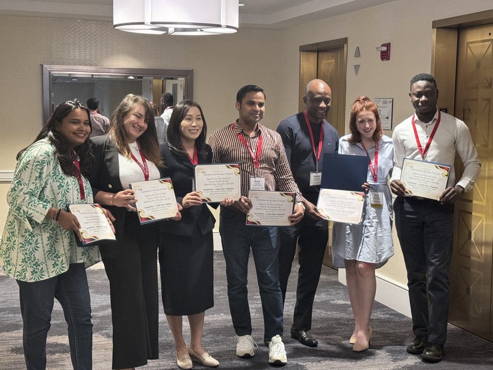
Endometriosis as a feminist issue.
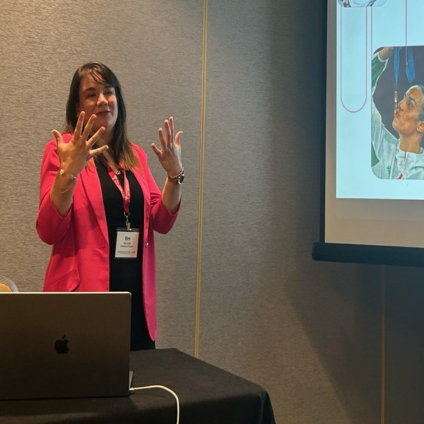
With Dr. Ibrahim. North African women athletes on Instagram.
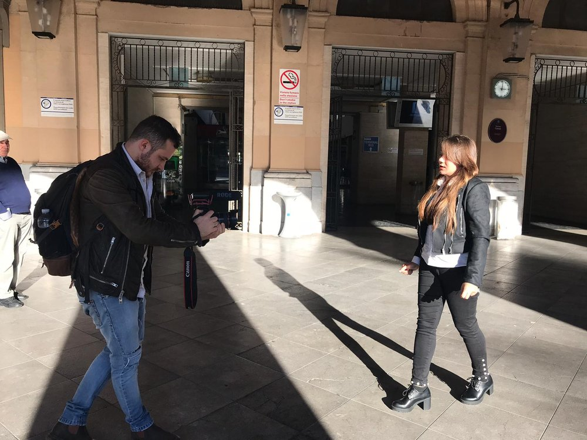
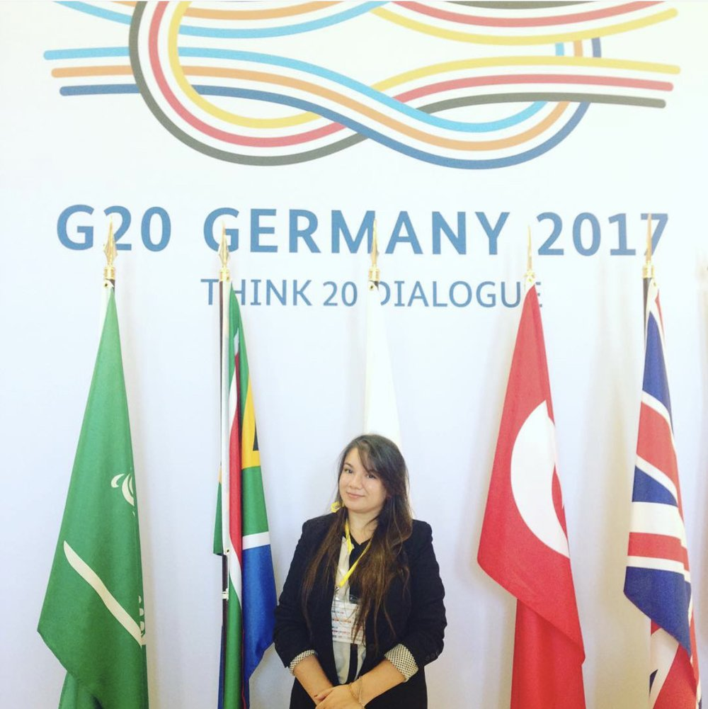
My path to academia was shaped by nearly a decade of work across journalism, strategic communication, international development, and public engagement in North Africa, Europe, and the United States. Working across cultures and communication contexts shaped the questions that continue to drive my scholarship.
Today, I bring that experience to computational social science, studying how media, strategic communication, and emerging technologies shape attitudes, behaviors, identities, and social experiences.
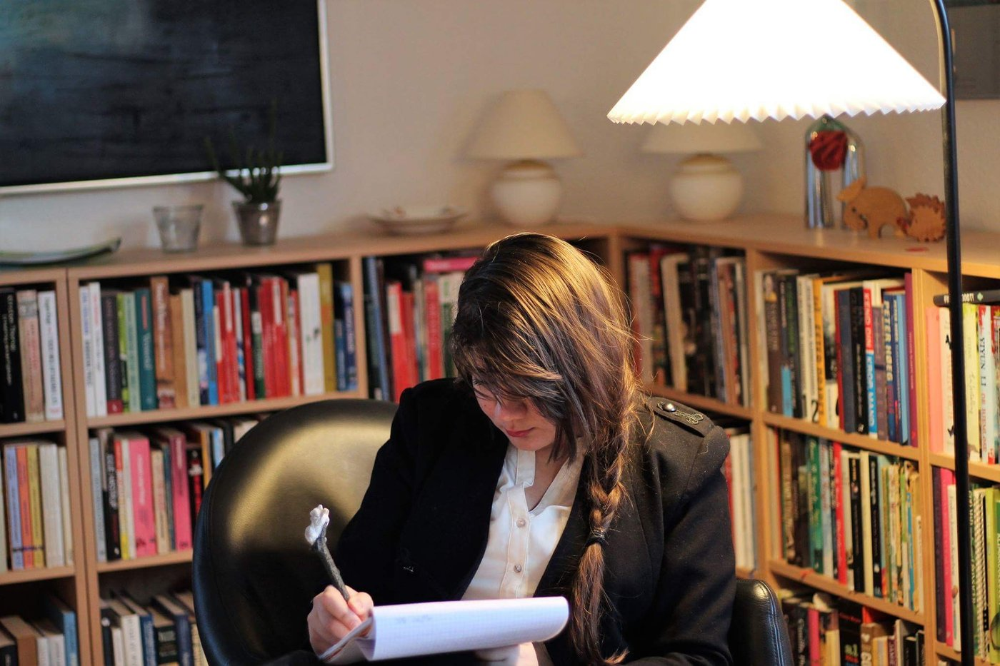
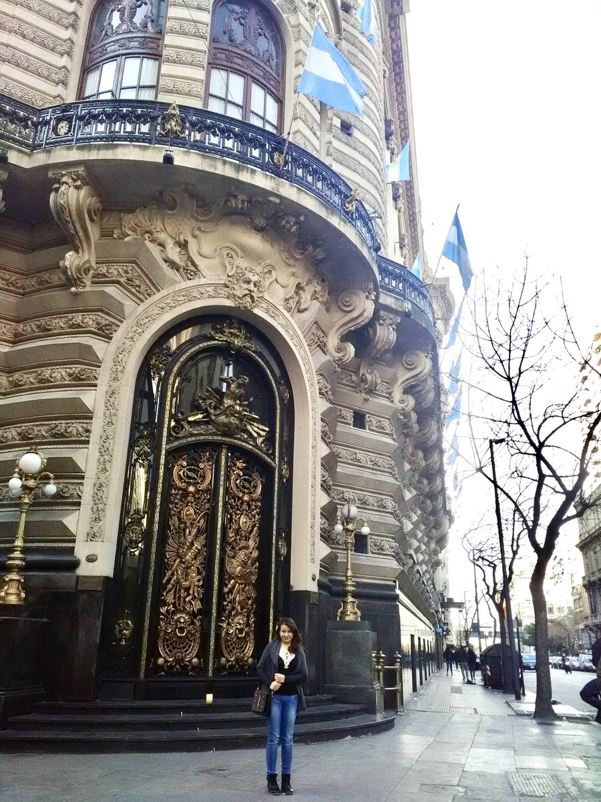
“Communication at the intersection of technology, society, and human well-being.”